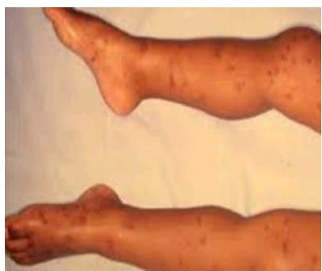
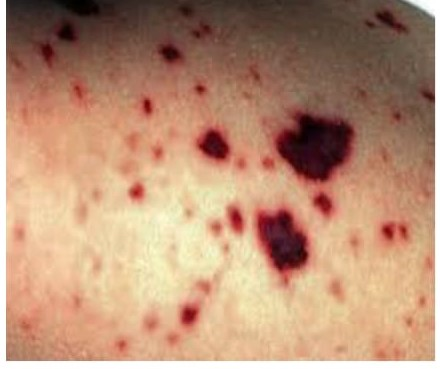
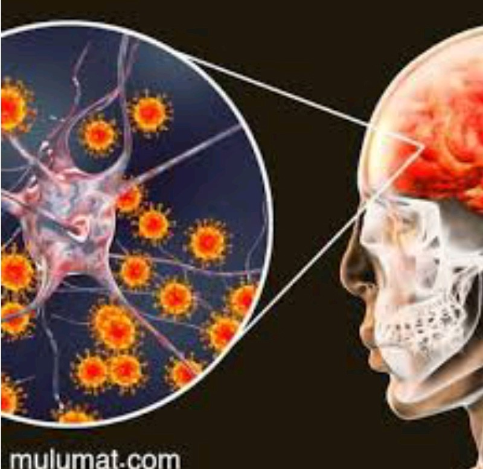

<!DOCTYPE html>
<html lang="en">
<head>
    <meta charset="UTF-8">
    <meta http-equiv="X-UA-Compatible" content="IE=edge">
    <meta name="viewport" content="width=device-width, initial-scale=1.0">
    <title>meningitis</title>
    <link rel="stylesheet" href="css/bootstrap.min.css">
    <link rel="stylesheet" href="css/all.min.css">
    <link rel="stylesheet" href="css/page1.css">
    <link rel="preconnect" href="https://fonts.googleapis.com">
<link rel="preconnect" href="https://fonts.gstatic.com" crossorigin>
<link href="https://fonts.googleapis.com/css2?family=Cairo:wght@300;400;700&family=Dancing+Script:wght@400;500;600&family=Roboto:wght@100;300;400;500&family=Work+Sans:wght@200;300;500;600;700;800&display=swap" rel="stylesheet">
</head>
<body>
   <!--start navbar-->
   <nav class="navbar navbar-expand-lg ">
    <div class="container-fluid">
      <a class="navbar-brand" href="#">Meningitis</a>
      </div>
  </nav>
  <!--end navbar-->
    <div class="row">
        <div class="col-lg-8 col-sm-12">
            <h3>Defination</h3>
            <p>
                -It is an inflammation of the membranes that 
                surround the brain and spinal cord, and it can 
                affect anyone.
                Meningitis is an inflammation of the membranes that cover the brain and spinal cord, known as the meninges. Meningitis can be caused by a variety of infectious agents, including viruses, bacteria, fungi, and parasites
            </p>
        </div>
        <div class="col-lg-4 col-sm-12">
            
            </div>
    </div>


    <div class="row">
        <div class="col-lg-8 col-sm-12">
            <h3>Reasons</h3>
            <p>
                Transmission of bacteria (meningococcal 
bacteria of all kinds, or pneumococcus 
bacteria, or Haemophilus influenzae bacteria) 
or viruses (enterovirus, mumps virus, or 
herpes simplex virus) that cause the disease 
to the body.
Meningitis can be caused by a variety of infectious agents, including viruses, bacteria, fungi, and parasites. Some common causes of meningitis include:

1. Bacterial meningitis: This is a serious and potentially life-threatening form of meningitis that is most commonly caused by the bacteria Neisseria meningitidis, Streptococcus pneumoniae, or Haemophilus influenzae.

2. Viral meningitis: This is a less severe form of meningitis that is caused by various viruses, including enteroviruses, herpes simplex virus, and West Nile virus.

3. Fungal meningitis: This is a rare form of meningitis that is caused by fungal infections, typically in people with weakened immune systems.
            </p>
        </div>
        <div class="col-lg-4 col-sm-12">
            
            </div>
    </div>
      
    
    <div class="row">
        <div class="col-lg-8 col-sm-12">
            <h3>Types</h3>
            <p>
                Types of meningitis:
Bacterial meningitis:
The types of bacteria that affect people of 
every age group differ, and they are 
contagious, dangerous, and life-threatening.
Viral meningitis:
It is more common than bacterial, and it 
spreads in late summer and early fall. It is 
contagious and usually mild and goes away 
quickly.
Chronic meningitis: 
It is transmitted between people if it is 
bacterial.
Other types: 
fungal meningitis, parasitic meningitis, and 
chemical meningitis.
The symptoms of meningitis can vary depending on the age of the individual and the cause of the infection. In general, symptoms may include:

1. Fever

2. Headache

3. Stiff neck

4. Nausea and vomiting

5. Sensitivity to light

6. Confusion or difficulty concentrating

7. Seizures

8. Rash (in some cases)
            </p>
        </div>
        <div class="col-lg-4 col-sm-12">
            
            </div>
    </div>

    <div class="row">
        <div class="col-lg-8 col-sm-12">
            <h3>Treatment</h3>
            <p>
                It is important to know what type of 
meningitis is causing it because treatment 
varies depending on the cause:
Treatment of viral meningitis: 
It cannot be treated with antibiotics, but it 
goes away in most cases without medical 
interventions by resting, drinking fluids, and 
using painkillers.
Treatment of bacterial meningitis:
intravenous antibiotics and steroidal antiinflammatory drugs, and medications vary 
according to the bacteria causing the disease.
Treatment for meningitis typically involves hospitalization and administration of antibiotics or antiviral medications, depending on the cause of the infection. In addition to medications, supportive care may be necessary to manage symptoms and prevent complications. This may include getting plenty of rest, staying hydrated, and using over-the-counter medications to alleviate symptoms such as fever and headache.

Prevention:
The best way to prevent meningitis is to get vaccinated. Vaccines are available for certain types of meningitis, including bacterial meningitis caused by Neisseria meningitidis and Streptococcus pneumoniae. Other steps that can be taken to prevent the spread of meningitis include practicing good hygiene, avoiding close contact with sick people, and covering the mouth and nose when coughing or sneezing.

Overall, meningitis is a serious condition that requires prompt diagnosis and treatment. By taking steps to prevent infection, such as getting vaccinated and practicing good hygiene, it is possible to reduce the risk of contracting and spreading meningitis.
            </p>
        </div>
        <div class="col-lg-4 col-sm-12">
            
            </div>
    </div>
</body>
</html>